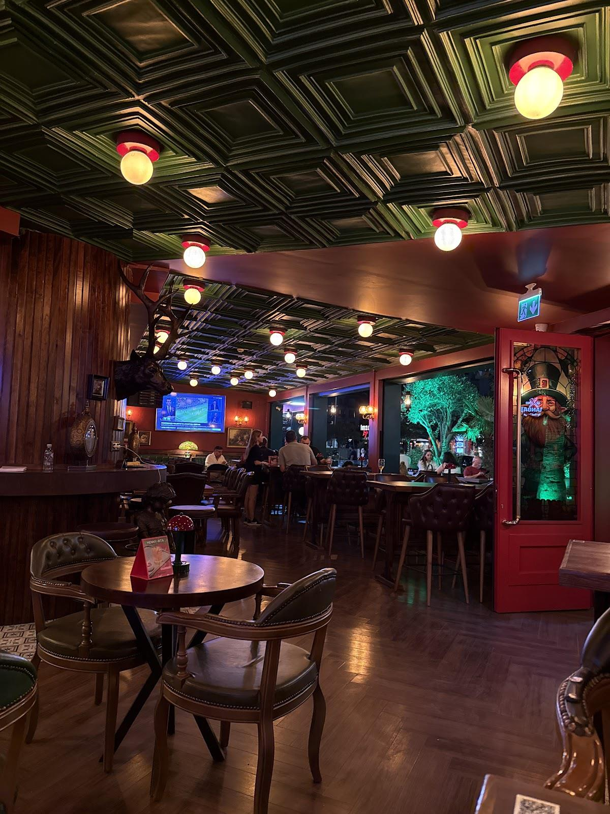

“Yiyecekler lezzetliydi, müzikler eşlik ettirdi. Konsept ortam da güzel, bir daha tercih edeceğim.”
Miraç Emre Uçak
Google yorumunu aç ↗
AKBATI’DA BİR AKŞAM
Günün planı burada değişsin.
Public Town’da arkadaşlarınıza yer açın.
İÇERİYE BİR ADIM
Vitray ışıklar, koyu ahşaplar, uzun bir bar. Public Town’ın İrlanda pub karakteri her köşede kendini gösteriyor.
Masaya yerleşin, menüye göz atın.
Sohbetin geri kalanı kendiliğinden gelir.
MUTFAKTAN MASAYA
Bir burger ya da bir tabak makarna.
Masada herkese bir yer var.
Bu bölüm ürün seçkisidir. Güncel çeşitler ve fiyatlar için işletmenin QR menüsünü inceleyin. İçerik ve alerjen bilgisi için ekibe danışabilirsiniz.
KENDİ KÖŞENİZİ BULUN
Arkadaşlarla bir buluşma, uzun bir sohbet.
Public Town’da akşama yer ayırın.
GOOGLE YORUMLARI
“Yiyecekler lezzetliydi, müzikler eşlik ettirdi. Konsept ortam da güzel, bir daha tercih edeceğim.”
Miraç Emre Uçak
Google yorumunu aç ↗“İlgi ve alaka gerçekten efsane! Özellikle Tuğba Hanım’ın güler yüzü, samimiyeti ve ilgisini belirtmeden geçmek istemem.”
Kardelen Berk
Google yorumunu aç ↗Google yorumlarından kısa alıntılar. Puan ve yorum sayısı kontrol tarihindeki kaydı yansıtır.
Rezervasyon ve güncel çalışma saatleri için arayabilirsiniz.
@publictown.akbati ↗